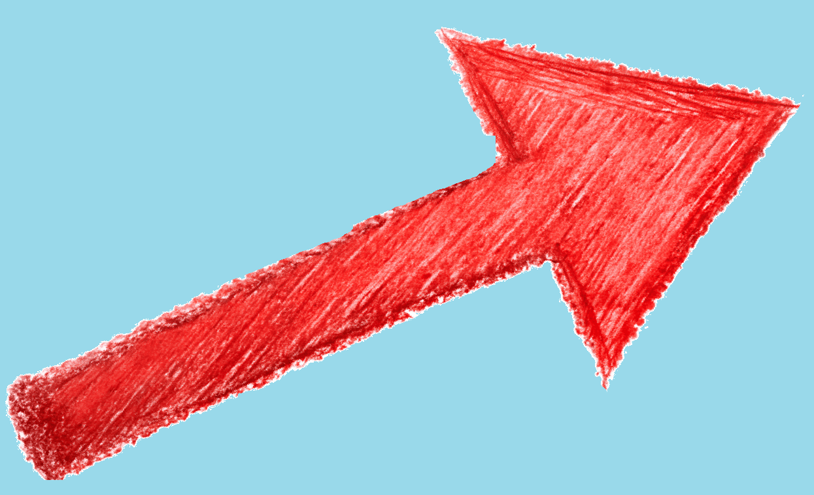

Hello traveler.

Here I will tell you about different types of CSS styling.
You can move away from this corner now.
Види організації сторінок:
position
- базове позиціонування за допомогою координат;flexbox
- позиціонування у відносно сторінки та інших елементів- шиш ай дуно